ד"ר משה בן ארי
מייסד המרפאה · וטרינר
בוגר הפקולטה לווטרינריה בבולוניה שבאיטליה. הקים את המרפאה ב-1985 ומאז מלווה בעלי חיים ומשפחות בצפון תל אביב, בעשרות שנות ניסיון קליני.
מרפאת בן ארי היא המרפאה הווטרינרית הוותיקה בתל אביב. שני דורות של רופאים — ד״ר משה וד״ר תומר בן ארי — מלווים אתכם ואת בן משפחתכם בעל הפרווה לאורך כל הדרך.
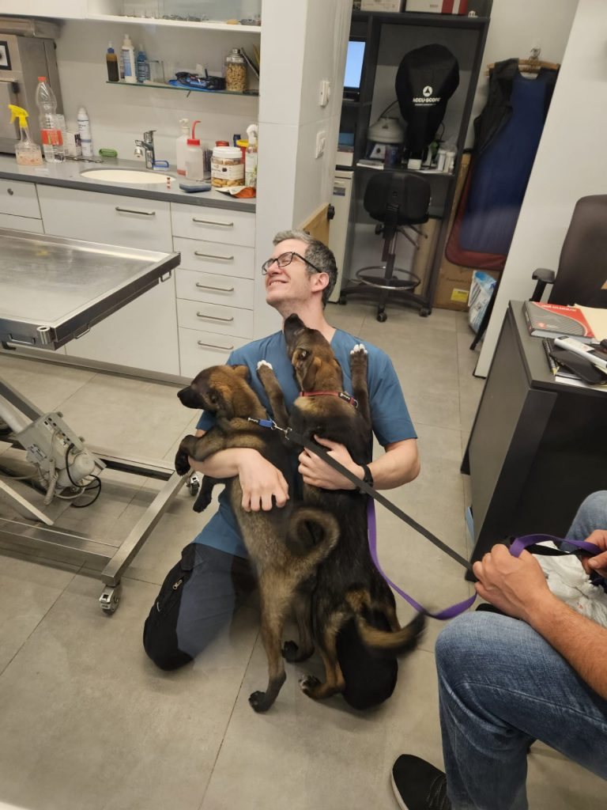
רפואה באהבה, מאז 1985מרפאת בן ארי הוקמה על-ידי ד"ר משה בן ארי בשנת 1985, והיא המרפאה הווטרינרית הוותיקה ביותר בתל אביב. המרפאה ממוקמת ברחוב ברודצקי 43, במרכז המסחרי הצמוד לקניון רמת אביב.
מזה עשרות שנים אנחנו מקדישים את עצמנו לטיפול בבעלי חיים באהבה רבה, במקצועיות ובהתלהבות שרק הולכת וגדלה — היום, כבר בדור שני של רופאים במשפחה אחת.
בוגר הפקולטה לווטרינריה בבולוניה שבאיטליה. הקים את המרפאה ב-1985 ומאז מלווה בעלי חיים ומשפחות בצפון תל אביב, בעשרות שנות ניסיון קליני.
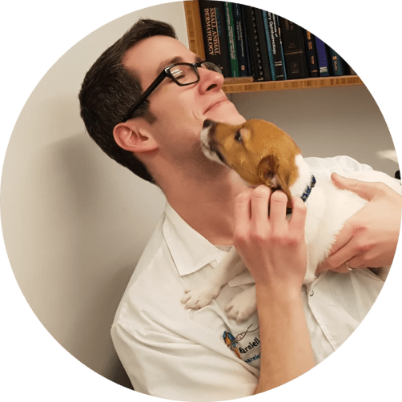
בנו של משה ובוגר בית הספר לווטרינריה של האוניברסיטה העברית. לאחר כשנתיים במרפאת חירום גדולה בתל אביב הצטרף למרפאת אביו המתחדשת.
וטרינר הוא למעשה ‘רופאים רבים ברופא אחד’ — פנימאי, אורתופד, כירורג ורופא עור גם יחד. לצד כל אלה, אנו רואים בווטרינריה רפואת משפחה: אנו מלווים את בעל החיים בכל שלבי חייו, מגור קטן המצטרף למשפחה ועד לבגרותו ולזקנתו, וערים לצרכיו המשתנים.
אנו לעולם רואים לא רק את הבעיה הרפואית, אלא גם את המטופל ואת בני משפחתו. טיפול בבעל חיים הוא מסע משותף — מורכב, מרגש ובעיקר מהנה — ואנו רואים את עצמנו חלק בלתי נפרד ממנו.
מרפואה מונעת ועד ניתוחים מורכבים — בדיקות, הדמיה, מעבדה וטיפולים במקום אחד, עם רצף טיפולי שמכיר את בעל החיים שלכם לאורך זמן.
רוב הניתוחים הכירורגיים והאורתופדיים — עיקור, סירוס, הסרת גידולים ותיקון שברים. הרדמה בניטור מלא ובדיקות דם מקדימות בעת הצורך. אלפי ניתוחים בוצעו במרפאה.
חיסוני גורים וחיסונים תקופתיים המלווים בבדיקה בהתאם לגיל ולצורך, לצד שיחות התעדכנות ששומרות על קשר רציף בין המרפאה למטופלים.
טיפול בבעיות הרפואיות השוטפות: רפואה פנימית, רפואת עור, רפואת עיניים ונוירולוגיה — בעזרת המעבדה ואמצעי ההדמיה שבמרפאה.
מערכת מתקדמת לצילומי רנטגן דיגיטליים ומכשיר אולטרסאונד — כלים מרכזיים בתהליך האבחון. בעת הצורך מוזמן למרפאה מומחה אולטרסאונד.
מעבדת דם חדישה המאפשרת קבלת תוצאות תוך דקות אחדות, לצד בדיקות שתן מלאות ובדיקות נוספות בהתאם למקרה.
מעקב תקופתי אחר בריאות הפה של בעלי החיים, ניקויי אבנית וטיפולים לפי הצורך — כי בריאות הפה משפיעה על כל הגוף.
התאמת תזונה בריאה לכלב ולחתול לפי הצרכים, הגודל, הגיל, הגזע והיקף הפעילות — כולל דיאטות רפואיות.
הדרכה וליווי במגוון נושאים: חינוך גורים, גמילה מצרכים, חרדת נטישה ותוקפנות. במקרים מיוחדים נפנה למומחי התנהגות לסיוע נוסף.
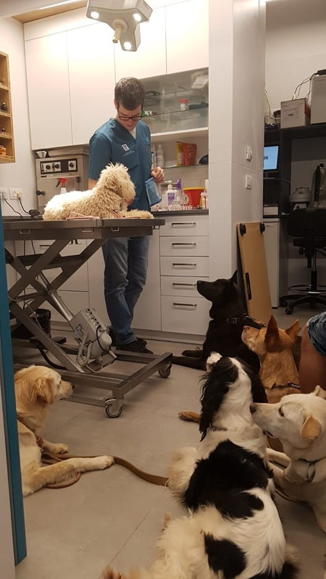
הרציפות היא היתרון הגדול. אותו רופא שמכיר את ההיסטוריה הרפואית מזהה שינויים מוקדם ומקבל החלטות טובות יותר. אנו מלווים כל משפחה בשינויים שהיא עוברת — לידות, שמחות, פרידות ונסיעות — ורואים את בעל החיים תמיד כחלק מן הסביבה ומן המשפחה שלו.
ומעבר לרפואה, אנחנו כאן לכל שאלה: איך גומלים כלב מצרכים? איך מלמדים את הילדים לעזור בטיפול? איך נערכים ללידה במשפחה, ומה עושים כשהכלב לא מפסיק לנבוח?
דברו איתנולאורך השנים עברו במרפאה אינספור מטופלים בלתי נשכחים. הנה כמה מהם, בלשונו של ד"ר בן ארי.
כלבת יורקשייר זעירה ואינטליגנטית שיילדנו במרפאה בניתוח קיסרי. המעניין: את הגידול חלקו ביניהן אמה ג׳וי ודודתה טוי — הדודה אף החלה לייצר חלב בעקבות היריון מדומה, ולקחה על עצמה את עיקר ההנקה.
לא בכל יום מחליט חתול לבלוע מטבע של 10 סנטים — אך ביז'ו הלך על זה. הוא הגיע לאחר שסירב לאכול והקיא ימים אחדים; צילום הרנטגן עורר חשד, והוא נותח בהצלחה והתאושש להפליא. מאז עברו בבית לתשלומים בשטרות ובאשראי בלבד…
כלב בוקסר רב-עוצמה שניצל מהתעללות. חובב מגבות ושטיחונים שאותם נהג לחתוך ולאכול — ובילינו איתו ערב שלם במרפאה בשחזור מגבת מרצועות הבד שהוצאנו מקיבתו. למרות עברו הקשה, סטיבי לא איבד את האמון בבני אדם ואת האופטימיות.
גורת חתולים בת חודשיים שנמצאה באחת מחצרות תל אביב. מדהים היה לראות כיצד בזמן קצר נוצר קשר נפלא עם המשפחה — קיטי החלה לבטוח בעולם, לתת אהבה ולקבל אותה בחזרה. הגורים האלה נמצאים סביבנו כל הזמן; הם רק צריכים בית חם.
גולדן רטריבר בן 9, עליז ומלא חיים, שהגיע לאחר שאכל שקית תאנים, קילו שוקולד על עטיפותיו ואת שקית הזבל שנשארה מיום ההולדת. הפעם ללא ניתוח — אך לפני שנים ניתחנו אותו לאחר שבלע חיתול. הבעיה של הגולדנים והלברדורים? הם נשארים צעירים תמיד…
כלב מרשים מגן הכלבים ברחוב רידינג. כשחברו הגולדן לקי אושפז אצלו עם דלקת מעיים, העיר שייקספיר בלילה את בעליו כדי שיורידו את לקי החוצה — הוא זיהה את מצוקתו ופתר את הבעיה כחבר טוב. שאפו, שייקספיר.
מטופלים אמיתיים, רגעים אמיתיים. כך נראה יום במרפאת בן ארי.
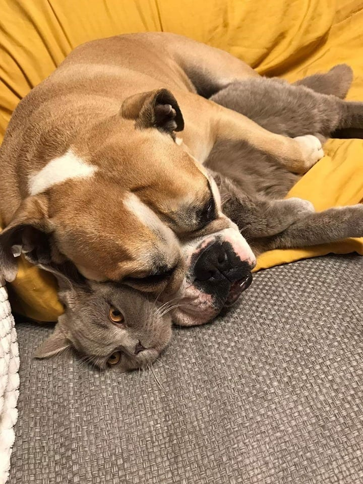
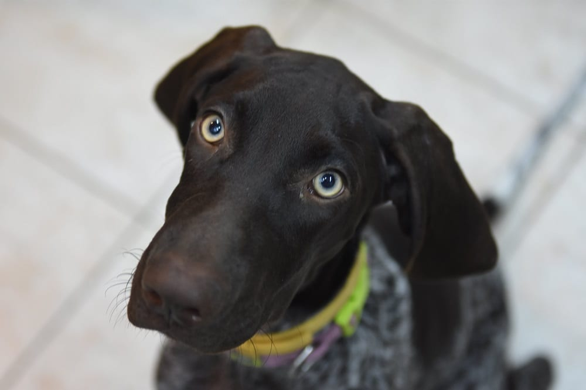
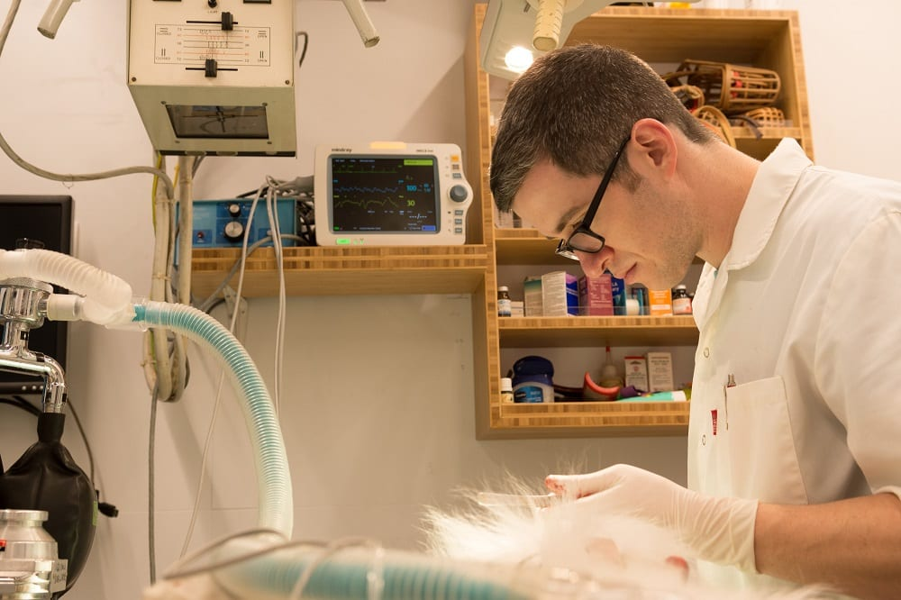
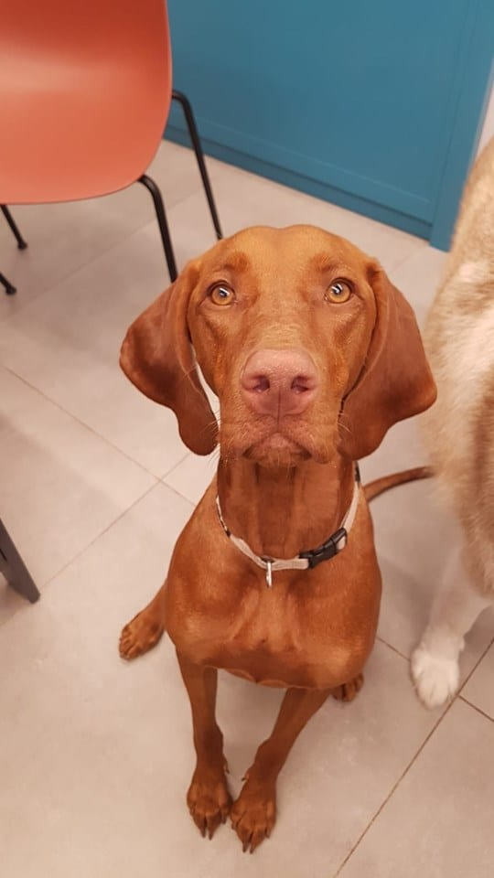
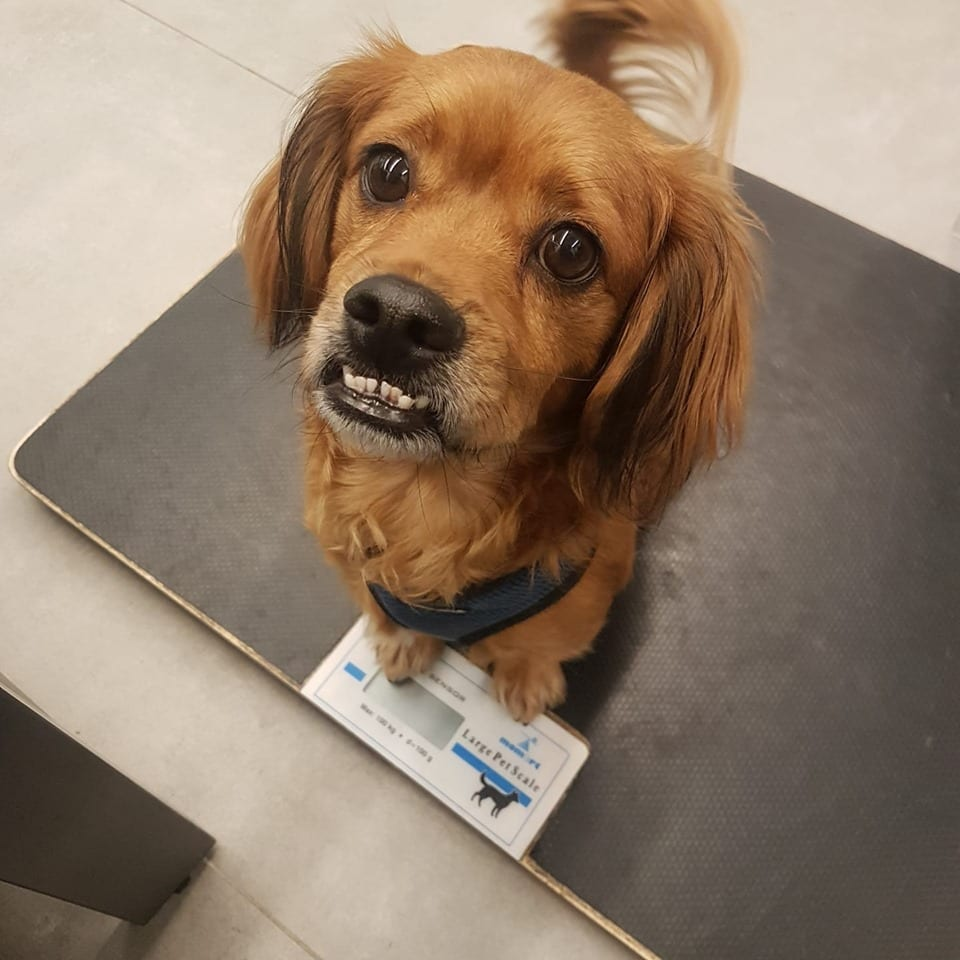
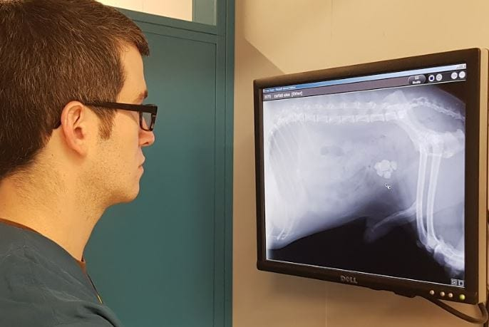
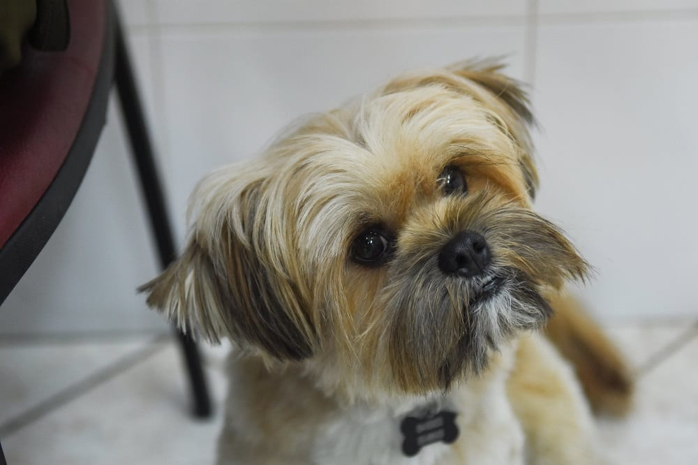
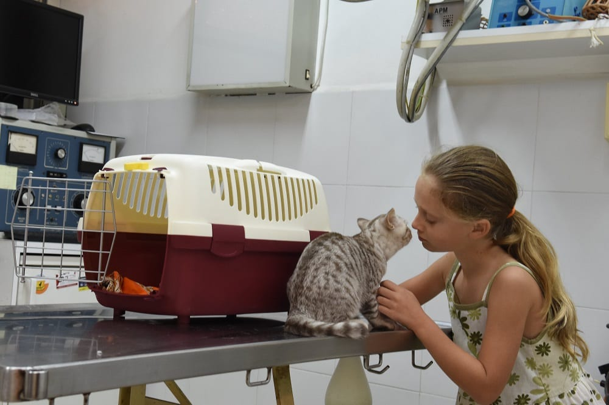
"ד"ר בן ארי מעניק שירות נהדר לכל לקוחותיו! אדם טוב לב, תמיד בעל סבלנות להסביר ולענות על כל שאלה, פועל במקצועיות ומביע חיבה אמתית כלפי בעלי החיים. אווירה מצוינת, שירות אדיב וטיפול מסור. מומלץ בחום!"
"וטרינר מקצועי, זמין ומאוד נחמד — והכי חשוב, מסביר פנים. הכלב שלנו רק מחכה לביקורים אצלו, והאמת שגם אנחנו. מומלץ בחום."
"וטרינר מעולה שנותן לכל לקוח שירות מדהים — סבלני, מקצועי ואדיב. ללא ספק הטוב ביותר. מאוד מומלץ!"
"רופא מדהים!!! עזר לי כל כך הרבה, היה קשוב, סבלני, עם אכפתיות אמיתית."
"פניתי כדי לטפל בחתולה, והוא היה אדיב וסבלני. קיבלתי את כל העזרה שהייתי צריכה בטלפון, בלי צורך להגיע פיזית ובלי לגבות תשלום על השיחה."
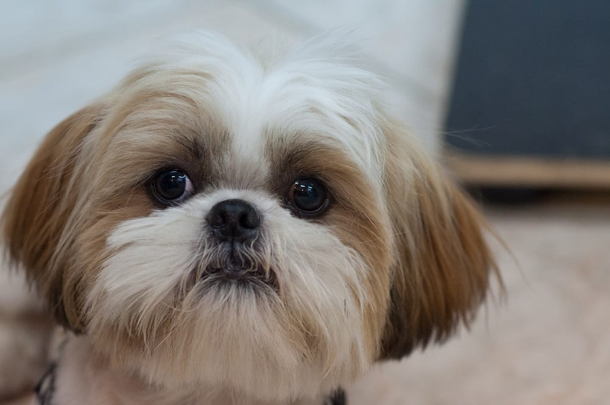
אנחנו מאמינים שרפואה טובה לא נגמרת בין כותלי המרפאה. משה ותומר משתתפים בימי אימוץ, מסייעים בטיפול בבעלי חיים חסרי בית ומלווים משפחות מאמצות בתקופת ההתאקלמות של בעל החיים בביתו החדש — ובהמשך חייו.
גם בבחירת המקצוע וגם בהתנדבות, אנחנו עדיין מתרגשים בכל פעם מחדש למראה ילד שמאמץ גור, או קשיש שמחליט להכניס שמחה חדשה לחייו.
פציעה פתאומית, קשיי נשימה, הקאות חוזרות או בליעת חומר מסוכן — אל תחכו. התקשרו למרפאה, ונבצע הערכה ראשונית מהירה ונכוון אתכם מה לעשות עכשיו ומתי להגיע.
תכנים מקצועיים על בריאות הכלב והחתול, מאת ד"ר משה וד"ר תומר בן ארי.
מתי נדרש וטרינר חירום, מה קורה בהגעה למרפאה, וכיצד מתבצעת הערכה ראשונית מהירה במצבים של פציעה, קשיי נשימה או בליעת חומר מסוכן.
קראו עודעל המרפאה הפועלת למעלה מ-40 שנה בתל אביב, ומדוע רצף טיפולי ומעקב מתמשך עושים את ההבדל בבריאות הכלב והחתול.
קראו עודמערך רפואי מלא המאפשר לבצע במקום אחד בדיקות, הדמיה, טיפולים ובמידת הצורך גם ניתוחים — וסימנים שכדאי לשים לב אליהם מוקדם.
קראו עודכשכל דקה חשובה — היכולת לבצע אבחון, הדמיה וטיפול תחת קורת גג אחת מקצרת את הדרך מהחשד להחלטה הטיפולית.
קראו עודליווי רפואי מתמשך מאפשר לזהות שינויים מוקדם ולשמור על רצף טיפולי, גם כשאין סימנים ברורים לבעיה.
קראו עודליווי רפואי לאורך זמן מאפשר לשמור על יציבות בריאותית ולהגיב מוקדם לשינויים — עוד לפני שמופיעים סימנים ברורים.
קראו עוד| ראשון–חמישי | 10:00–13:00 · 16:00–19:00 |
|---|---|
| שישי | 14:30–17:00 |
| שבת | סגור |